A kitchen deserves more design attention than just a great backsplash and shiny appliances.
The right window treatment pulls the whole room together, adds genuine comfort, and can shift the entire mood of the space.
Whether the goal is layered texture, a pop of color, or something sleek and simple, there is a treatment here built for almost any kitchen window.

18 Kitchen Window Treatment Ideas
1. Geometric Curtain Panels
For anyone ready to go a little bolder and more modern, geometric curtain panels bring real energy to a kitchen window.
The pattern itself becomes the room's main visual interest, which means everything else can stay simple around it.
Balancing the bold print with solid, neutral walls and simple accessories keeps the whole room feeling fresh rather than overwhelming.
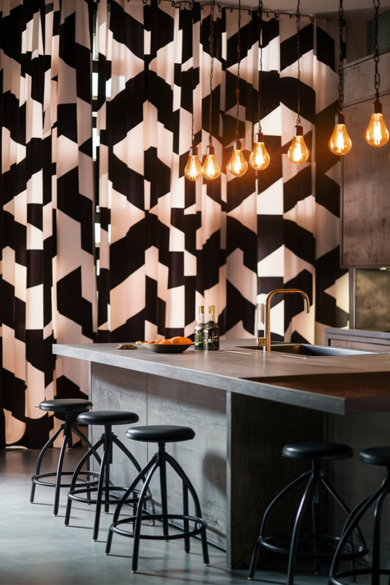
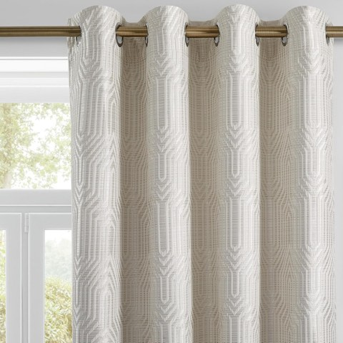
Beige and Silvery 100% Blackout Geometric Pattern Curtains, 2 Panels, 96 Inches Long
Shop on Amazon2. Scalloped Valances
For a little playful charm, scalloped valances bring genuine personality to an otherwise plain window.
The curved edge reads as quirky and sweet without feeling overly fussy or dated.
Paired with cafe curtains underneath, they build toward maximum quaintness for a kitchen that leans cozy and vintage.
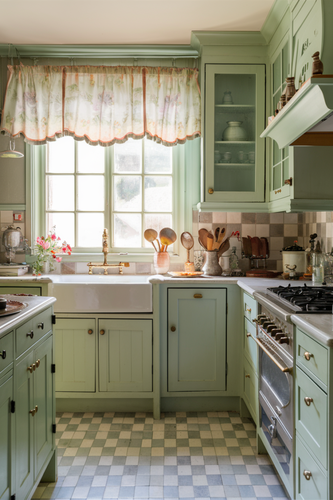
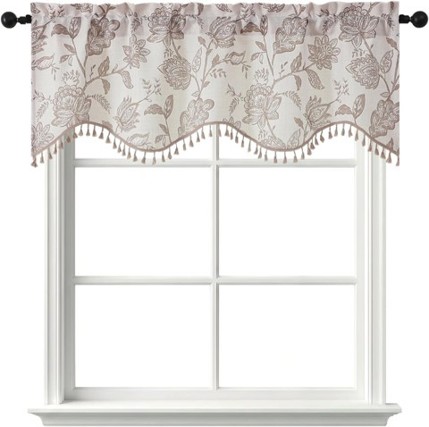
Scalloped Valance for Windows, Faux Linen, Short Kitchen Valance with Tassels
Shop on Amazon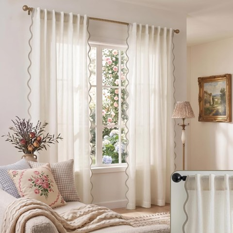
Cottage Core Cream Scalloped Linen Curtains, French Country Ruffle Farmhouse
Shop on Amazon3. Woven Wood Shades
Woven wood shades bring the same natural texture as bamboo, just with a bit more visual variety in the weave.
The material adds real warmth to a kitchen window without feeling heavy or overly rustic.
Paired with a light, airy curtain layered behind them, they create that dreamy, textured look a lot of kitchens are missing.
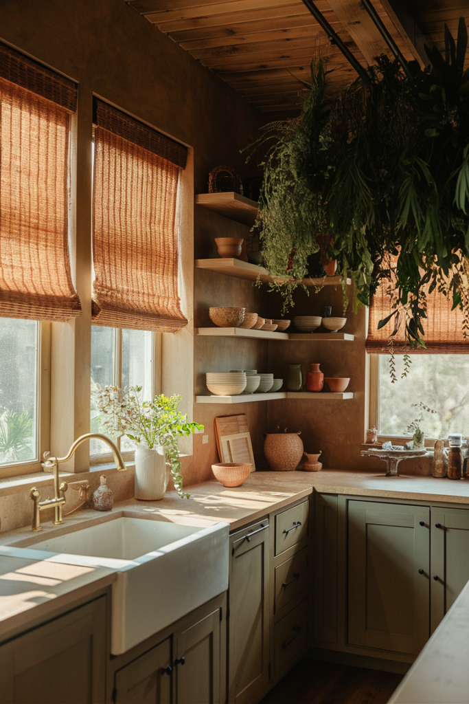
4. Frosted Glass Film
For anyone who'd rather skip curtains and blinds entirely, frosted glass film solves privacy with zero daily maintenance.
It diffuses light beautifully while blocking a direct view in or out, all without adding any visible hardware.
It works especially well on an awkward or high-use window where a curtain would just get in the way.
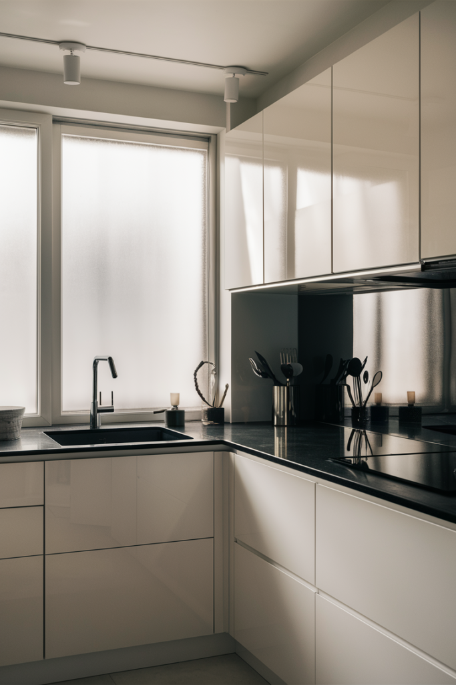
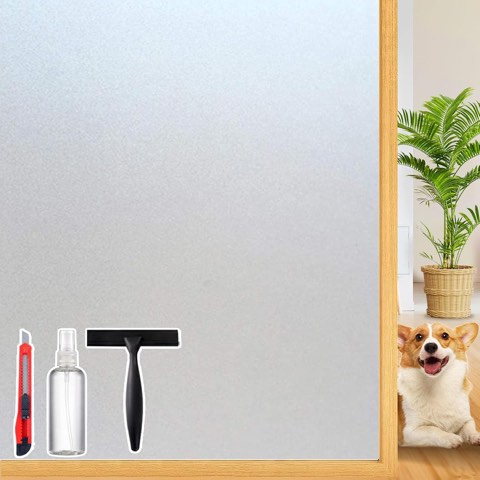
Dwersty Frosted Glass Window Privacy Film, 29.5 x 78.74 Inch, Decorative
Shop on Amazon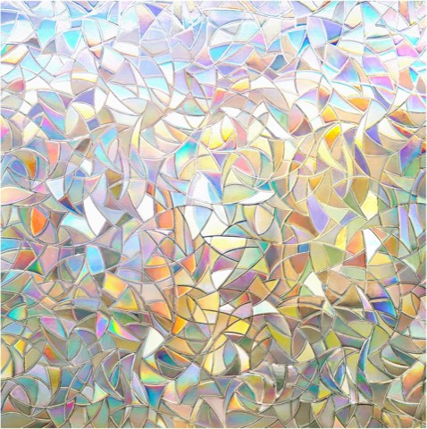
rabbitgoo Rainbow Window Privacy Film, Stained Glass Cling, 17.5 x 78.7 Inch
Shop on Amazon5. Floor-to-Ceiling Drapes
For a kitchen with genuinely large windows or sliding doors, floor-to-ceiling drapes elevate the whole space considerably.
The sheer scale of them adds real drama and makes the ceiling feel taller than it actually is.
Jewel tones like emerald or sapphire read as rich and luxe, while a neutral keeps the same scale feeling timeless instead.
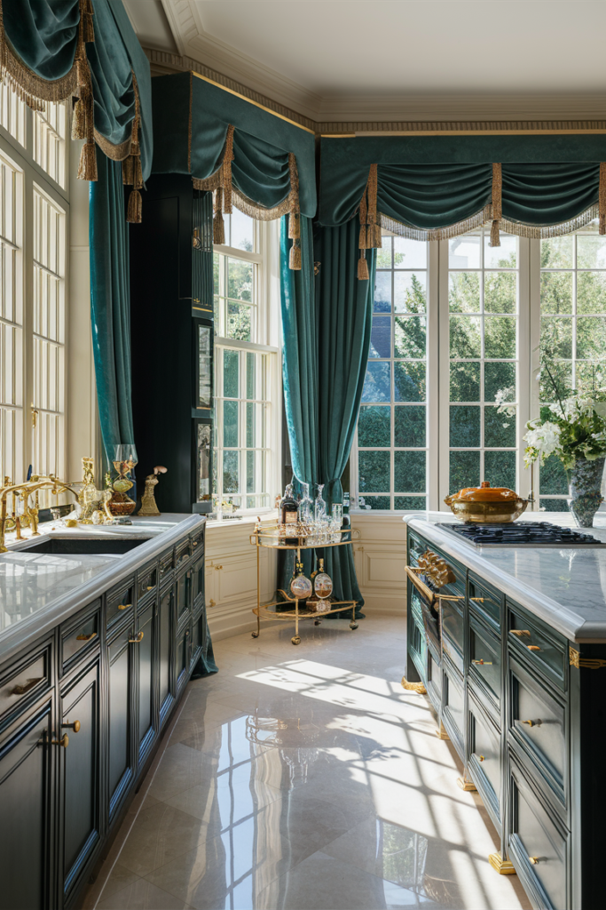

6. Patterned Roller Blinds
For anyone bored of plain neutrals, a patterned roller blind delivers genuine personality without much extra effort.
The pattern becomes the window's whole focal point, which simplifies the rest of the room's styling decisions.
Coordinating the pattern with the backsplash or countertop accents pulls the whole kitchen together.
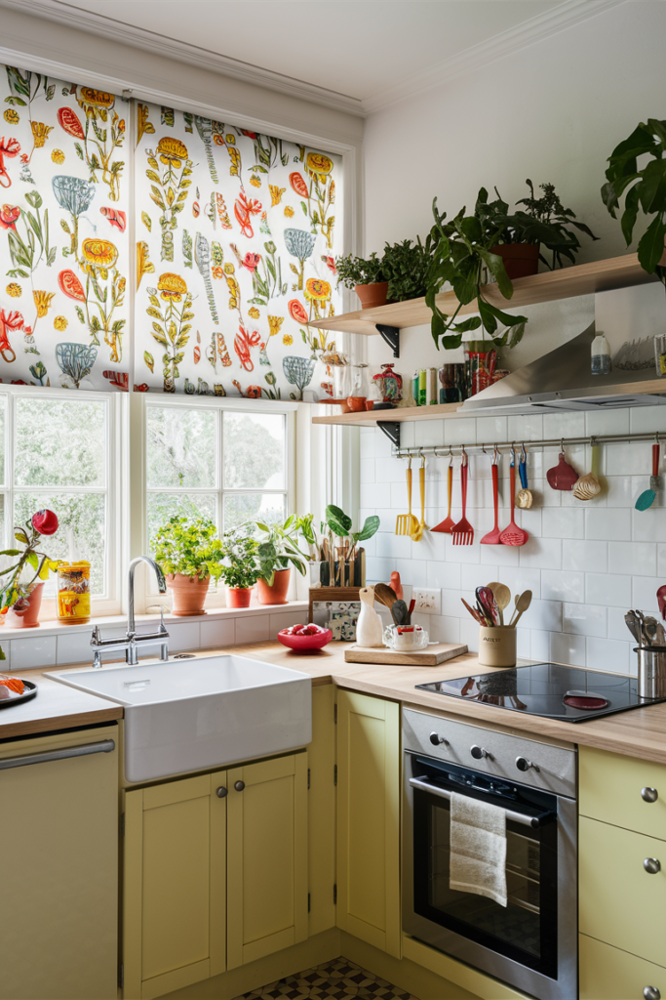
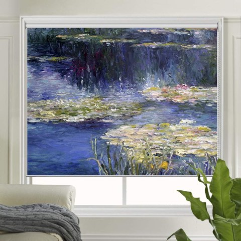
LETAU Printed Blackout Roller Window Shades, UV Protection, Monet Water Lilies
Shop on Amazon7. Venetian Blinds
Venetian blinds remain a practical standby, easy to adjust, genuinely versatile, and still stylish after decades of use.
They control light with real precision, tilting to let in exactly as much as needed at any time of day.
Wood blinds lean cozy, while aluminum ones suit a modern, industrial kitchen especially well.
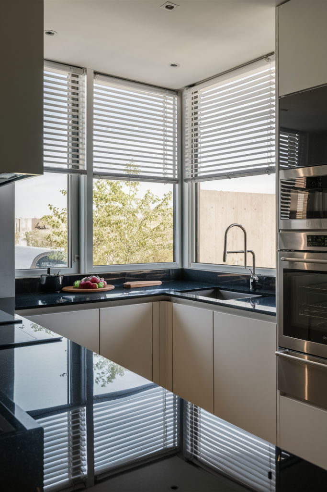
8. Custom Cornices
Cornices are an underrated finishing touch, adding real structure and style to a window in one single move.
They sit at the top of the window frame, giving the whole treatment a tailored, considered look.
A bold print makes a genuine statement, while a solid, matching color keeps the whole thing subtle and cohesive.
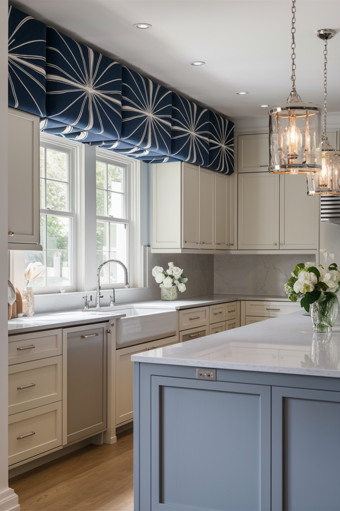
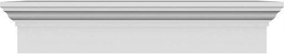
Endurathane Traditional Crosshead Window Pediment, 33 Inch Bottom Width
Shop on Amazon9. Linen Drapes
Soft linen drapes create that light, floaty, relaxed feeling that heavier fabrics simply cannot replicate.
They move gently with any passing breeze, which adds a subtle sense of life to the whole kitchen.
Sticking to earthy tones like sand, sage, or cream keeps the look feeling genuinely elegant rather than casual.
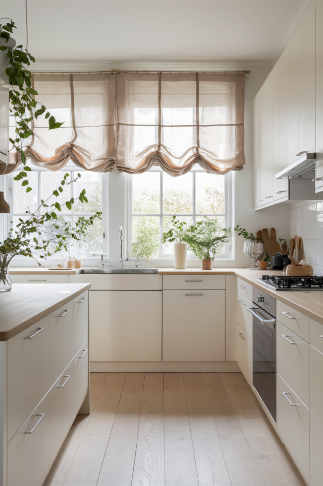
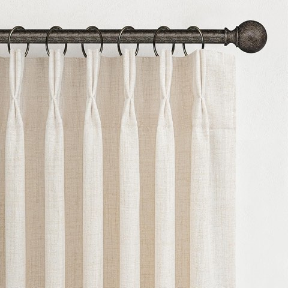
Pinch Pleated Linen Curtains, 96 Inches Long, Light Filtering Boho Window Drapes
Shop on Amazon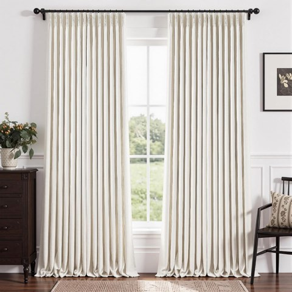
Blackout Triple Pinch Pleat Curtains, Natural Cream, 86 Inches Long, 2 Panels
Shop on Amazon10. Cafe Curtains
Cafe curtains remain a classic for good reason, covering just the bottom half of a window keeps privacy intact while still letting light pour in up top.
They work especially well over a sink or a prep area where full privacy is not actually needed.
Paired with a small breakfast nook, they bring a genuinely charming, cafe-like feeling to an everyday morning routine.
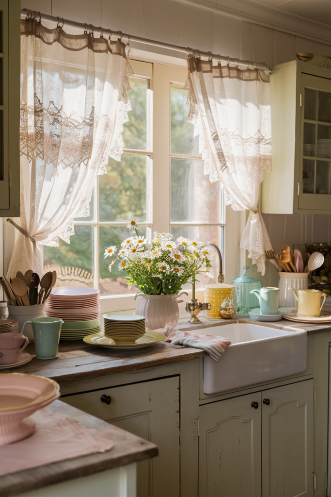
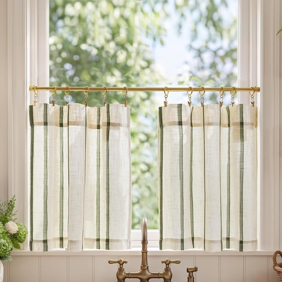
jinchan Linen Striped Tier Curtains for Kitchen Windows, Green, 26 x 24 Inch
Shop on Amazon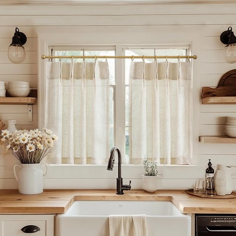
jinchan Pinch Pleated Tier Curtains, 26 x 36 Inch, 2 Panels, Crude Linen
Shop on Amazon11. Stained Glass Panels
For a window that functions as genuine art, stained glass is hard to beat.
It transforms ordinary daylight into something colorful and considerably more interesting the moment it hits the glass.
Paired with warm wood tones and a classic tile backsplash, it strikes an old-meets-new balance that reads as intentional rather than dated.
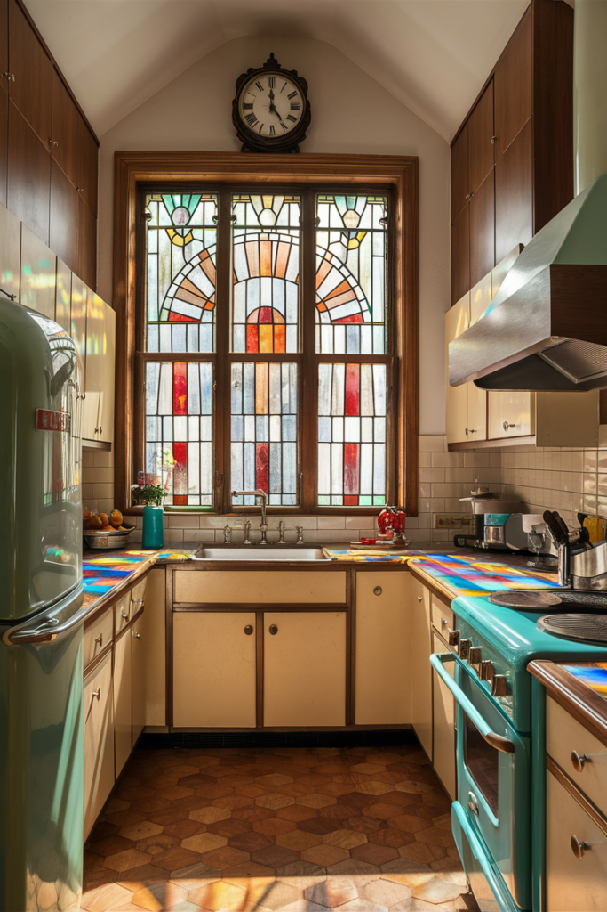
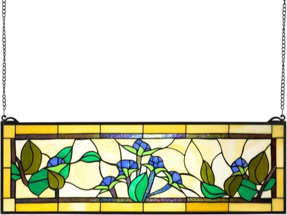
VEVOR Tiffany Style Stained Glass Window Panel, 32 x 10 Inch, Hanging Transom
Shop on Amazon12. Minimalist Roller Shades
Roller shades are clean, minimal, and quietly do the job without ever demanding attention.
They raise and lower easily, which makes them genuinely practical for a kitchen window that gets used daily.
A soft, neutral greige keeps the look modern while still reading as warm rather than sterile.
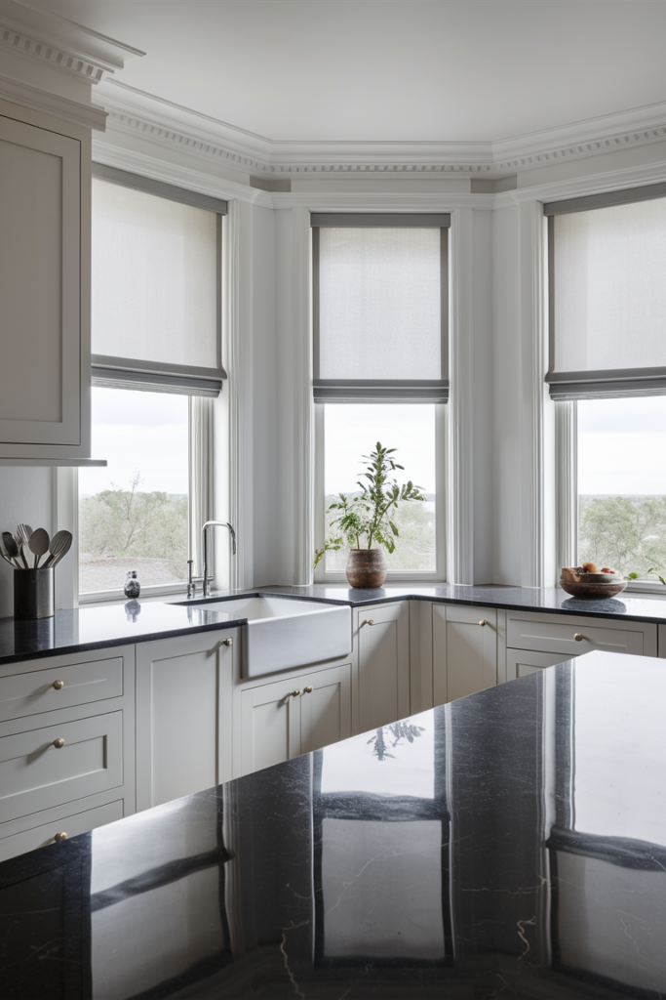
13. Layered Drapes
Layering window treatments is one of the more underrated ways to add real coziness to a kitchen.
Combining a sheer base layer with a heavier drape on top gives the window both softness and real structure.
Keeping the palette cohesive, soft grays, warm taupes, or earthy greens, avoids visual chaos while still adding genuine depth.
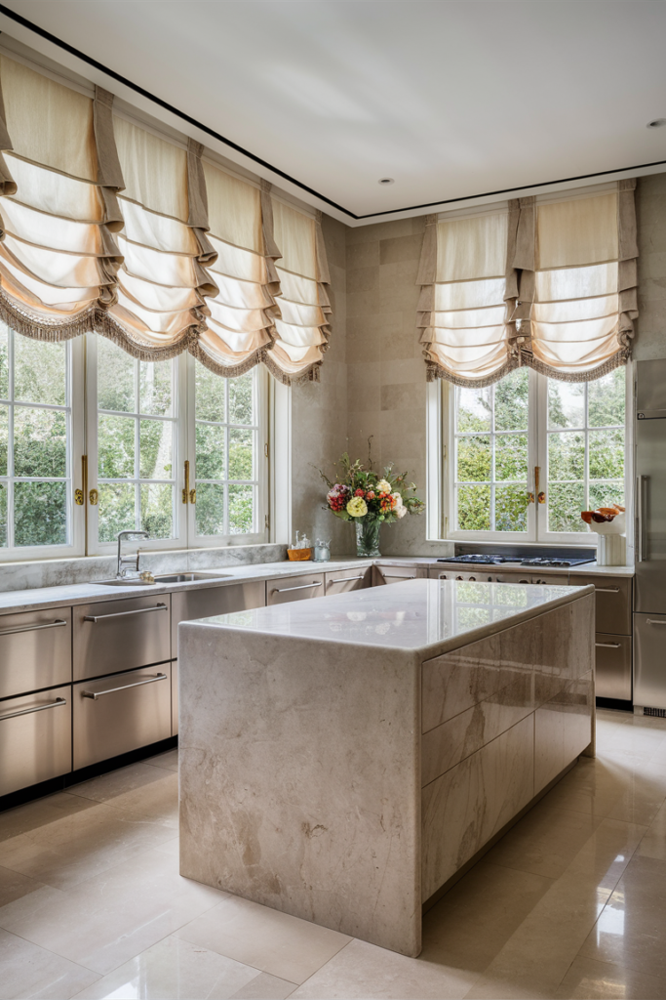
14. Bamboo Shades
For organic texture without going fully tropical, bamboo shades hit a genuinely good middle ground.
They filter light softly while adding a natural, earthy material that most kitchens are otherwise missing.
They suit a rustic or farmhouse kitchen especially well, particularly alongside a wooden dining table and a bit of greenery.
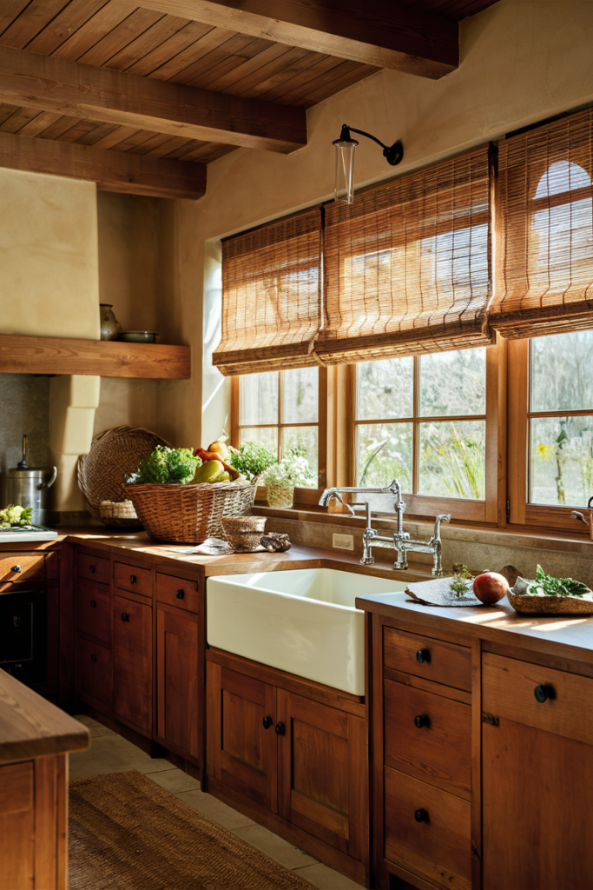
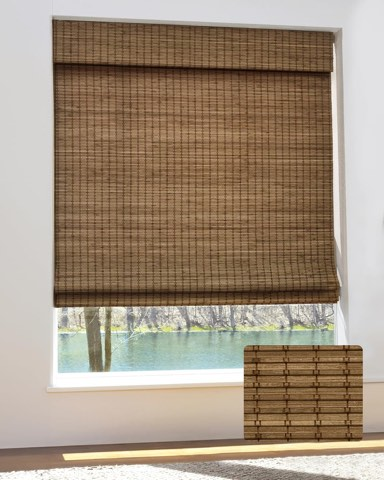
UNISHADES Bamboo Roman Shades with Valance, 22.5 x 48 Inch, Highfield Teak
Shop on Amazon15. Plantation Shutters
Plantation shutters bring a genuinely put-together, timeless energy to a kitchen window.
They are neat, satisfying to adjust, and manage to look intentional in almost any style of home.
Paired with natural textures like a jute rug or wooden stools nearby, they lean into a relaxed, almost coastal feeling.
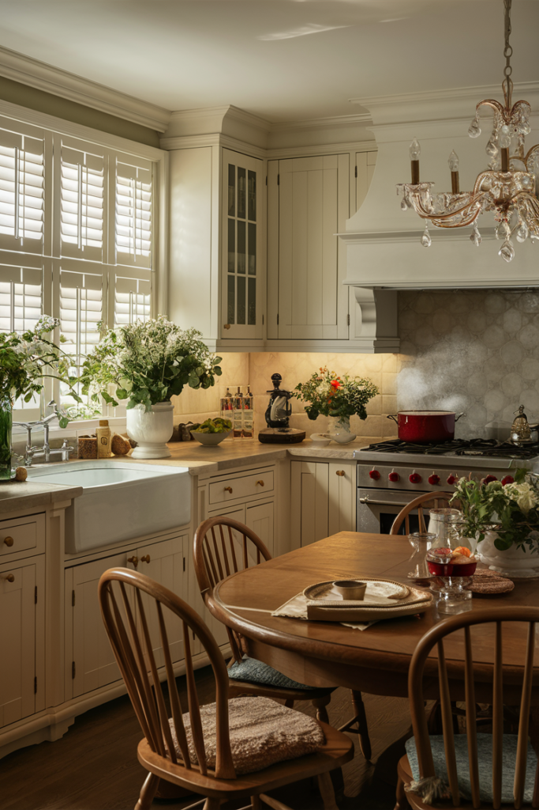
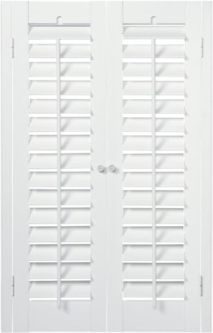
HOME BASICS Premium Solid Faux Wood Interior Shutters, White, 2 Panels, 27 x 24 Inch
Shop on Amazon16. Bold Valances
Valances are genuinely underrated, small, stylish, and still noticeable even though they only cover the top portion of a window.
They add a finished look to a window without the commitment of a full curtain or drape setup.
Matching a valance to the backsplash or countertop accents ties the whole kitchen together in a way that is easy to overlook until it is actually done.
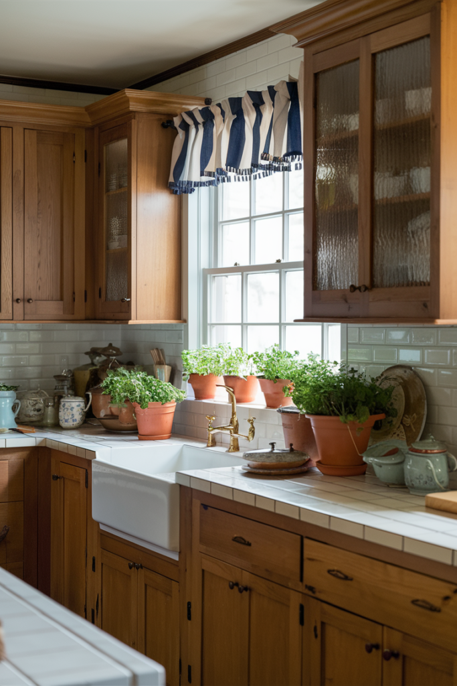
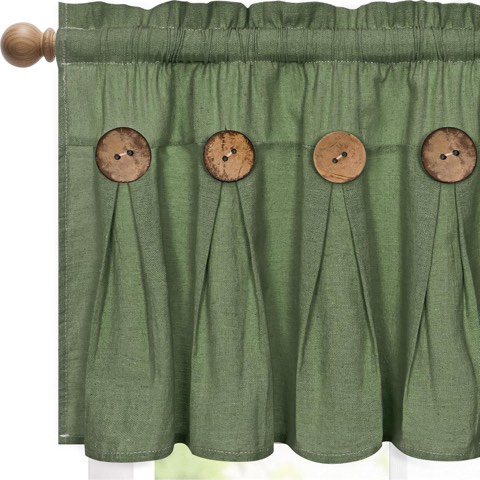
FRAMICS Farmhouse Valance Curtain, Boho Cotton Linen, Olive Green, Rustic Button
Shop on Amazon17. Sheer Curtains
For a kitchen that should feel open, breezy, and full of light, sheer curtains do more of that work than almost any other option.
They soften a window without actually blocking the light coming through it, keeping the whole room feeling airy.
Paired with natural wood or white cabinetry, sheers add a genuinely light, charming quality to the space.
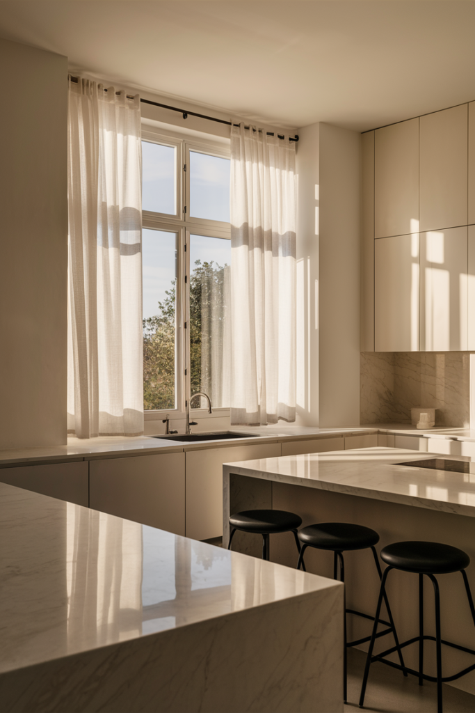
LIVEKID White Sheer Kitchen Curtains, 36 Inch Length, 2 Panels
Shop on AmazonLecloud White Sheer Curtains, 84 Inches Long, 2 Panels
Shop on Amazon18. Roman Shades
Roman shades carry a reliable, effortlessly chic quality without ever looking like they are trying too hard.
They fold neatly when raised and lie flat when down, which keeps the whole window looking tidy either way.
Neutral tones like white or beige keep the look clean and versatile, while a bold pattern turns the same shade into a genuine statement piece.
HESTIA No-Drill Roman Shades for Indoor Windows, Beige, 35.5 x 64 Inch
Shop on AmazonUNISHADES Cordless Fabric Roman Shades, 36.75 x 60 Inch, Natural
Shop on AmazonFinal Thoughts
None of these treatments require replacing cabinets or counters to make a real difference.
A single well-chosen window treatment can shift the whole feel of a kitchen on its own.
Roman shades, bamboo texture, or a flirty scalloped valance, there is no reason to settle for just one direction if more than one genuinely fits the space.